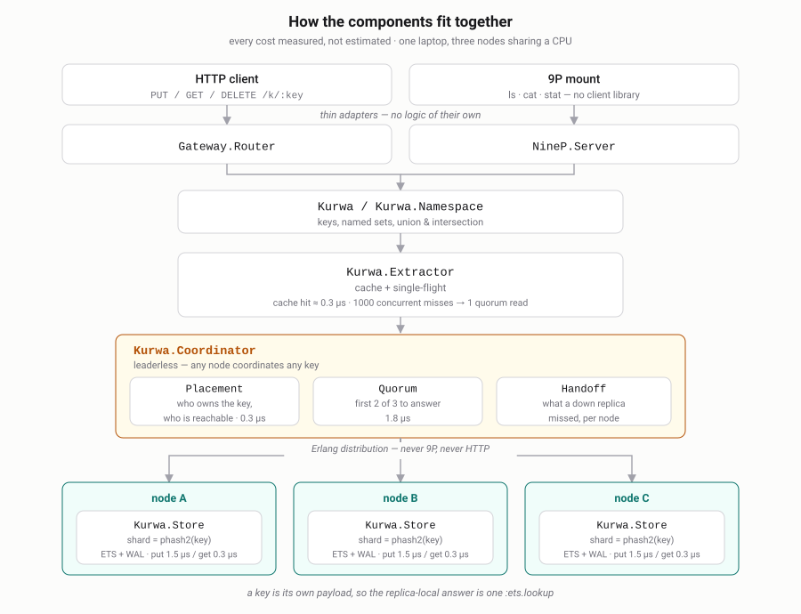
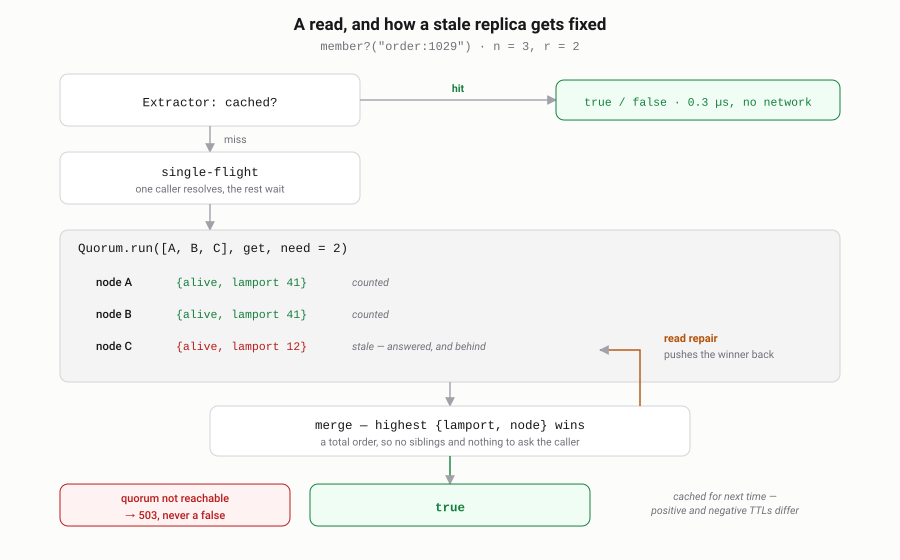

A key is its own payload
Keys and nothing else. No values, no scans, no queries, no leader — one constraint, and everything downstream of it gets simpler.
Holding back the things you have already seen
Every job this store is good at is the same job: a flood arrives, and only the ones you have not seen before should get through. That is a dam built out of keys.
- Deduplication
- A message bus redelivers. Ask the set whether this event id has been handled, once, from any consumer on any node.
- Idempotency keys
- The client retried the payment. The second attempt has to find its own key already there — and if the store cannot tell you, it must say so rather than guess.
- Rate limits
- One key per caller per window, with a TTL the size of the window. The key deletes itself when the window closes.
- Blocklists and frontiers
- Blocked addresses, revoked tokens, URLs the crawler has already fetched. Membership is the whole question.
What is missing is the point
{key, value, version…}
Two writes disagree about the value, so something has to choose: vector clocks and siblings, a merge function, or a silent loss.
{key, lamport, node, alive?, wall, expires_at}
Nothing to disagree about but existence, so the merge is a comparison of two numbers. There is no room for a value, and that is the feature.
Kill a node and watch what does not happen
The replica set for a key does not move when a node goes down — it keeps its share of the keyspace, and the writes it misses are kept for it. Click a node.
A simulation of the behaviour the cluster tests assert, not a live cluster. Counters are illustrative.
The chain
- A key has no contents.
- Two concurrent writes cannot disagree about anything but existence.
- Merging replicas is comparing
{lamport, node}. A total order. - So no vector clocks, no siblings, no merge function in the application.
- And no leader: any node coordinates any key.
Six properties this was all for
- No leader
- Nothing to elect, no pause on failover. Losing a node costs capacity, not availability.
- Self-healing
- A node that was away keeps its share of the ring, and the writes it missed are kept durably and replayed when it returns — and a background pass compares replicas and fixes what drifted even when nobody read the keys. Nobody asks the beaver to repair the dam; it turns up with the logs.
- Error ≠ absent
- An unreachable quorum is a
503, never afalse. This is exactly where cache-based deduplication lies to you. - 339 ns
- A local membership check is one
:ets.lookupin the caller's own process — no mailbox, no copy. - Keys expire
- A TTL becomes an absolute instant once, so every replica reaches the same verdict on its own. An expired key needs no tombstone to stay gone.
- 3 bytes per key
- The on-disk engine keeps a Bloom filter in RAM instead of the keys — ten times less memory than Redis, and a key that is not there is answered in 200 ns without touching the disk, and one that is in 3.6 µs. That check is the one function written in Rust.
- It mounts
- The core knows nothing about protocols, so the store also speaks 9P:
ls,cat,statinstead of admin endpoints.
Four operations
Kurwa.add("order:1029") #=> :ok Kurwa.member?("order:1029") #=> true Kurwa.delete("order:1029") #=> :ok Kurwa.count() #=> {:ok, %{approximate: 1, ...}} Kurwa.add("seen:event:88", ttl: :timer.minutes(10))
Plus named sets and algebra over them, resolved at read time and copying
nothing: member_any?(["blacklist", "greylist"], key). The sets
themselves can be listed, because a set name is just a key in a reserved
set — so it replicates and repairs itself like everything else.
Speed is part of the contract
A release that is slower than the one before it is a broken release. The regression is the bug, not the new baseline.
Which is only worth saying if it can be checked, so every figure here comes
from a script in bench/ and every version gets a column in
PERFORMANCE.md.
HTTP figures from 0.9.0 on are measured with four load generators instead of one,
because one was the ceiling: the same server read 96,900 req/s with one and 133,900
with four.
| Operation | 0.11.0 |
|---|---|
| Local membership check | 361 ns |
| Quorum across 3 nodes, single client | ~40 µs |
| Quorum across 3 nodes, 64 clients | 65k writes/s · 69k reads/s |
GET /k/:key, keep-alive | 131k req/s |
POST /batch, 100 keys per request | 446k keys/s |
| PostgreSQL protocol, prepared statements | ~140k tps |
Redis protocol, SISMEMBER | ~127k req/s |
| RAM per key, in-memory engine | 128 B · 152 B |
| RAM per key, on-disk engine | 3.0 B |
| Anti-entropy digest, 4096 buckets | 32 KB |
Against Redis, on the same machine
Not our numbers against someone's published ones — Redis 8.0.3 built here, both
servers run one at a time, and since kurwadb speaks RESP, the same
redis-benchmark drives both: four threads, 64 connections, two runs on
6 October 2026. bench/versus.sh reproduces it.
| 1M keys, 13 bytes each | RAM per key | SISMEMBER/sec | pipelined ×16 |
|---|---|---|---|
| Redis 8.0.3 | 30.2 B | 143–160k | 1.64–1.83M |
| kurwadb in-memory, RESP | 128.1 B | 125–129k | 0.74–0.82M |
| kurwadb in-memory, HTTP + JSON | 128.1 B | 124–132k | — |
| kurwadb on-disk, hit from disk | 3.0 B | 93k | — |
| kurwadb on-disk, miss | 3.0 B | 119k | — |
| kurwadb, 3-node quorum | — | 68k | — |
Redis is 4× more memory-efficient than our in-memory engine — part of that is the Lamport stamp, origin, tombstone flag and expiry we store and it does not, the rest is BEAM overhead. The on-disk engine is 10× better than Redis, because what it keeps in RAM is a Bloom filter rather than the keys. On throughput Redis is the faster single server: 15–20% one request at a time, and 2.2× pipelined. This page once blamed the gap on HTTP and JSON; with the same client and the same protocol on both sides it is still there, so it is the cost of a request inside kurwadb, not the wire. The on-disk engine, a million keys loaded, answers a hit from disk at 75% of the in-memory rate and a miss at the same speed.
So the case for it is not speed on one node. It is a set that outgrows RAM and is still answered exactly, writes acknowledged by two machines instead of one, and no primary to fail over from — the long version.
Apple M4, 10 cores; all three nodes share that one CPU, n=3 r=2 w=2.
128 bytes for a 13-byte key, 152 for a 36-byte one — jaki gruby, and
measured rather than guessed.
How it fits together



The database as a filesystem
stat is the membership check, create is the add,
remove is the delete. Not a metaphor — the same data model.
9p -a localhost:564 ls / ctl stats ring keys b64 sets 9p -a localhost:564 read ring member kurwa1@10.0.0.1 up member kurwa2@10.0.0.2 up member kurwa3@10.0.0.3 down echo compact | 9p -a localhost:564 write ctl
No SDK, no vendor CLI. The key directories deliberately refuse to be listed: there are no scans here, and an empty listing would be a lie.
psql, mysql, sqlcmd, mongosh, redis-cli, and the driver you already have
kurwadb speaks the PostgreSQL wire protocol. A set is a table with one column,
key, and the queries are the ones a set can answer without a scan.
INSERT INTO seen VALUES ('order:1'), ('order:2'); INSERT 0 2 SELECT key FROM seen WHERE key IN ('order:1', 'order:3'); key --------- order:1 (1 row) DELETE FROM seen WHERE key = 'order:1'; DELETE 1 SELECT * FROM seen; ERROR: SELECT from seen without WHERE key = ... would be a scan, and there are none
Prepared statements and binary results, so psycopg and node-postgres work as they
are; \dt lists sets and \d describes one. There are no
transactions — BEGIN is accepted because drivers send it unasked,
and ROLLBACK says nothing was rolled back. Around 140,000 prepared
statements a second under pgbench, on one node.
The same tables answer over the MySQL protocol, to mysql,
mariadb and the MySQL connectors — INSERT IGNORE,
prepared statements, SHOW TABLES, columns named the way MySQL names
them — around 130,000 queries a second.
And SQL Server: sqlcmd, ODBC and tedious connect over TLS, as they do by
default, T-SQL's IF NOT EXISTS (…) INSERT is an insert with one
winner, and stored procedures run from .sql files deployed with the
node.
And MongoDB: a collection is a set, a document is {_id: key}, a second
insert of an _id is E11000 with one winner, and every node
answers as a mongos, so a driver given several nodes fails over between
them on its own.
It speaks RESP too. Redis sets are named sets, Redis keys are the default set, and the idempotency check works as it does against Redis:
SET order:1 x EX 3600 NX OK SET order:1 x EX 3600 NX (nil) SADD seen:orders a b (integer) 2 GET order:1 ERR kurwadb stores keys without values
There are no values, so GET refuses rather than invent one.
SET NX has one winner among concurrent callers, as on Redis — not
from a single thread but from a majority of replicas, and WATCH
aborts an EXEC when a watched key changed.
When not to take this
- One node, and the set fits in RAM. Redis is simpler, has a decade in production and an ecosystem, ties on throughput, and uses four times less memory than the in-memory engine. Take it.
- False positives are acceptable and you never delete. A Bloom filter costs 1.2 bytes per key against the on-disk engine's 3.0.
- You need scans, listings or queries. There are none, by construction, and that will not change.
- You need the on-disk engine to be mature. It exists and passes the same test suite, but it is younger than the in-memory one and compaction is crude.
- Zero hours in production. One author, no client libraries, no TLS between nodes.
Three nodes on your laptop
git clone https://github.com/holooloo/kurwadb cd kurwadb && mix deps.get scripts/cluster.sh # 4040, 4041, 4042 curl -X PUT localhost:4040/k/order:1029 curl -i localhost:4041/k/order:1029 # 200 — read from a different node